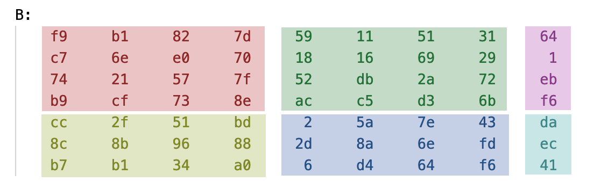

Lab 3 : Systolic Array#
Goal of this lab#
Introduction#
The systolic array used by Google Tensor Processing Unit (TPU) accelerates the matrix computation by using the dataflow operation. The systolic array contains multiple processing elements (PEs), each of them is responsible for the multiply–and-accumulate (MAC) operation. It can performs multiple elements in a matrix simultaneously and achieves high computational throughput.
In this lab, we will use Verilog to implement the PE and a small systolic array composed of 4 x 4 PEs. You may refer to different dataflow stationary policy (e.g. weight and output stationary).
(Hint: The weight stationary is more complicated than output stationary.)
Note
This lab does not require demonstration, submit your code to E3 only, details are in Submission.
You will be asked to put your systolic array on FPGA in lab 5, so please make sure that your systolic array is a synthesizable circuit.
Systolic Array Implementation#
The goals of this lab are to familiarize you with the concepts of dataflows in systolic array architectures. This will get you hand-on experience with dataflow routing and processing elements implementations. In this lab, you only need to construct the TPU module.
Prerequisite#
Python3 with numpy library installed
iverilogorVCSorirunnWaveorVerdiorGTKWaveor anything that can read.vcdor.fsdbMakefile
Requirements#
You need to perform Matrix multiplication with one of dataflow stationary method with correct functional simulation in 4x4 Processing elements(PEs). That is, this design can perform (M * K) * (K * N) 8-bit integer matrix multiplication.
Your design should be written in the Verilog. There is no limitation in how you program your design. Your PEs shouldn’t exceed 4x4, where a 2D systolic array architecture is recommended. An 8-bits input data, 32-bits accumulated data design. Please be careful with the bit-width problem. (1024 + 256 ∗ 2) KiBytes in total of global buffer size.
Getting Started#
This lab will require a beginner’s level of verilog.
$ git clone https://github.com/nycu-caslab/AAML2024-Lab3.git
Note
The testbench generates waveform to dump.vcd or dump.fsdb (change the output file in the TESTBENCH.v).
After running the simulation each time, you may use your waveform viewer to check it out.
nWave (dump.fsdb | dump.vcd)
or
gtkwave dump.vcd
Note
The default verilog compiler in the makefile is
iverilog, and usingvvpas simulator. If you have the licence ofVCSand want faster simulation, you may use theMakefile_vcs.The
Makefile_ncverilogis for reference only, our Cadence licence has been down for a while :(
Interface and Block Diagram#
Block Diagram
{kind=link}
Tabel 1: The control signals
I/O |
Signal name |
Bit width |
Description |
|---|---|---|---|
Input |
clk |
1 |
The clock signal |
Input |
rst_n |
1 |
The reset signal, which is active low |
Input |
in_valid |
1 |
The input is valid when in_valid is high and will only high for one cycle |
Input |
K |
8 |
dimension K of the matrix (M,K), (K,N) |
Input |
M |
8 |
dimension M of the matrix (M,K), (K,N) |
Input |
N |
8 |
dimension N of the matrix (M,K), (K,N) |
Output |
busy |
1 |
High when the design is busy. Pattern will check your answer when busy is low after every in_valid. |
Tabel 2: The SRAM interface of A and B SRAM
I/O |
Signal name |
Bit width |
Description |
|---|---|---|---|
Input |
wr_en |
1 |
The write enable signal. |
Input |
index |
16 |
The address of the sram to be read or write. |
Input |
data_in |
32 |
The data input to write to the SRAM |
Output |
data_out |
32 |
The data output from the SRAM |
Tabel 3: The SRAM interface of C SRAM
I/O |
Signal name |
Bit width |
Description |
|---|---|---|---|
Input |
wr_en |
1 |
The write enable signal. |
Input |
index |
16 |
The address of the sram to be read or write. |
Input |
data_in |
128 |
The data input to write to the SRAM |
Output |
data_out |
128 |
The data output from the SRAM |
Rules#
Your TPU design (
TPU.v) should be under the top module which provided by TA, it’s fine to add various new files in theRTLdirectory.you may not modify the
global_buffer.v.At the start of the simulation, testbench will load the global buffer A & B, which assume that CPU or DMA has already prepared the data for TPU in global buffer. When signal
in_valid == 1, the size of the two matrices will be available for TPU (m, n, k) for only one cycle.
Note
For the details of the mapping of matrix into global buffer. Please refer to the Appendix. There are two types of mapping. The transposed Type A for matrix A, and Type B for matrix B and C.
Testbench will compare your output global buffer with golden, when you finish the calculation, that is
busy == 0. Then you need to wait for the nextin_validfor the next test case.You should implement your own data loader, process elements(PEs), and controller which schedule the data in global buffer A & B to be calculated in the systolic array.
You need to set
busyto high immediately afterin_validfall from high to low.Use asynchronous reset active low architecture.
The execution latency per matrix multiplication (not the whole execution time) is limited in 1,500,000 cycles.
Basic Exercise #1 - 20%#
Input data:
A matrix and B matrix which size are constrainted to 2 * 2
control signal (refer to details in table 1, 2, 3)
Required Output:
the 2*2 C matrix of A matrix * B matrix
Steps:
Take data from global buffer
Use the data from global buffer to calculate with PEs
Output the result to C global buffer
make verif110 test cases of A(2 * 2) * B(2 * 2)
The bench will tell if you did it correctly
Basic Exercise #2 - 20%#
Input data:
A matrix and B matrix which size are constrainted to 4 * 4
control signal (refer to details in table 1, 2, 3)
Required Output:
the 4 * 4 C matrix of A matrix * B matrix
Steps:
refer to Basic Lab1
make verif210 test cases of A(4 * 4) * B(4 * 4)
Basic Exercise #3 - 30%#
Input data:
A matrix and B matrix which size are 4 * K and K * 4 separately
control signal (refer to details in table 1, 2, 3)
Required Output:
the 4 * 4 C matrix of A matrix * B matrix
Steps:
refer to Basic Lab1
make verif310 test cases of A(4 * K) * B(K * 4)
Advanced Exercise - 30%#
Input data:
A matrix and B matrix which size are M * K and K * N separately
control signal (refer to details in table 1, 2, 3)
Required Output:
the (M * N) C matrix of A matrix * B matrix
Steps:
refer to Basic Lab1
make verif450 test cases of A(M * K) * B(K * N), where M, K, N ∈ [4, 128)
Appendix#
Memory Mapping - Type A (with transpose)#
The matrix A in global buffer A is placed with a transposed style, and other spaces are all 0-padded

Example of a 10 * 7 matrix
{kind=link}
the memory layout of this matrix looks like (note the transpose in the layout)
{kind=link}
Memory Mapping - Type B (without transpose)#

The matrix B looks more forward in memory layout, for example, a 7 * 9 matrix
{kind=link}
looks like this in global buffer B, with 0-padded also
{kind=link}
Submission#
Please organize your submission files into a zip archive structured as follows:
YourID.zip
└── YourID/
├── TPU.v
├── systolic_array.v
├── PE.v
└── other files you added inside the RTL directory...
Important
Make sure your files are well included!
You DO NOT have to submit the
global_buffer.v.
TAs should be able to run your project without any modification. If TAs cannot compile or run your code, you can’t get any scores. Also, PLAGIARISM is not allowed.